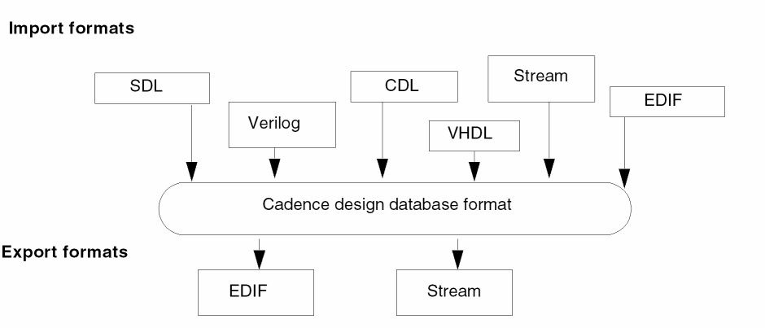
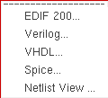
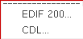

15
Importing and Exporting Designs
The Virtuoso Design Environment is an open system. You can create design data in a number of industry-standard data formats and use Cadence products to work on or complete your design.
The design data translators let you translate a design in one format to a Cadence design database format or take a Cadence design database and translate it into another format. Cadence offers the following translators (your site might or might not offer all of them):

For more information on design data translators, see the following books:
- Verilog In for Design Framework II User Guide and Reference Manual
- Virtuoso EDIF 200 Reader and Writer User Guide
- Guide to VHDL In for Design Framework II
- Design Data Translator’s Reference on OpenAccess
Importing Designs
To import a design in another format into the Cadence design databse format,
-
From the Command Interpreter Window (CIW), choose File – Import.
A submenu of the available translators on your system appears.
 - Select a translator.
Exporting Designs
To export a design from the Cadence design databse format into another design format,
-
From the CIW, choose File – Export.
A submenu of the available translators on your system appears.
 - Select a translator.
The interface form for the translator appears.
Return to top